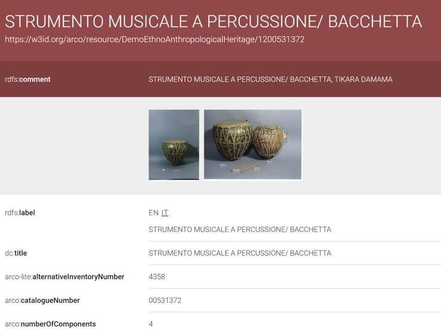

This serves as an illustrative example showcasing a standard description and classification of a musical instrument on ArCo. Unlike instruments such as ‘Ananda Lahari’ and ‘Dampha’ described previously, this percussion musical instrument specifies the property arco:numberOfComponents, which in this case is 4.
